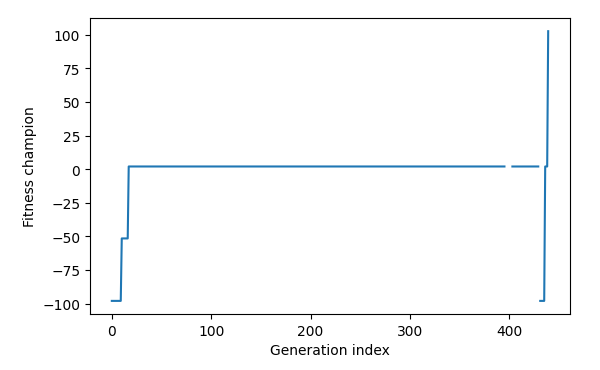

<!DOCTYPE html>
<html class="writer-html5" lang="en" >
<head>
  <meta charset="utf-8">
  
  <meta name="viewport" content="width=device-width, initial-scale=1.0">
  
  <title>Example: Solving an OpenAI Gym environment with CGP. &mdash; hal-cgp 0.2.0 documentation</title>
  

  
  <link rel="stylesheet" href="../_static/css/msmb.css" type="text/css" />
  <link rel="stylesheet" href="../_static/pygments.css" type="text/css" />
  <link rel="stylesheet" href="../_static/gallery.css" type="text/css" />
  <link rel="stylesheet" href="../_static/gallery-binder.css" type="text/css" />
  <link rel="stylesheet" href="../_static/gallery-dataframe.css" type="text/css" />

  
  
  
  

  
  <!--[if lt IE 9]>
    <script src="../_static/js/html5shiv.min.js"></script>
  <![endif]-->
  
    
      <script type="text/javascript" id="documentation_options" data-url_root="../" src="../_static/documentation_options.js"></script>
        <script src="../_static/jquery.js"></script>
        <script src="../_static/underscore.js"></script>
        <script src="../_static/doctools.js"></script>
        <script src="../_static/language_data.js"></script>
        <script src="../_static/js/versions.js"></script>
    
    <script type="text/javascript" src="../_static/js/theme.js"></script>

    
    <link rel="index" title="Index" href="../genindex.html" />
    <link rel="search" title="Search" href="../search.html" />
    <link rel="next" title="API reference" href="../api_reference/api_reference.html" />
    <link rel="prev" title="Example for evolutionary regression" href="example_evo_regression.html" /> 
</head>

<body class="wy-body-for-nav">

   
  <div class="wy-grid-for-nav">
    
    <nav data-toggle="wy-nav-shift" class="wy-nav-side">
      <div class="wy-side-scroll">
        <div class="wy-side-nav-search" >
          

          
            <a href="../index.html" class="icon icon-home" alt="Documentation Home"> hal-cgp
          

          
          </a>

          
            
            
          

          
<div role="search">
  <form id="rtd-search-form" class="wy-form" action="../search.html" method="get">
    <input type="text" name="q" placeholder="Search docs" />
    <input type="hidden" name="check_keywords" value="yes" />
    <input type="hidden" name="area" value="default" />
  </form>
</div>

          
        </div>

        
        <div class="wy-menu wy-menu-vertical" data-spy="affix" role="navigation" aria-label="main navigation">
          
            
            
              
            
            
              <ul class="current">
<li class="toctree-l1"><a class="reference internal" href="../installation.html">Installation</a></li>
<li class="toctree-l1"><a class="reference internal" href="../basic_usage.html">Basic usage</a></li>
<li class="toctree-l1"><a class="reference internal" href="../documentation/documentation.html">Documentation</a></li>
<li class="toctree-l1 current"><a class="reference internal" href="index.html">Examples</a><ul class="current">
<li class="toctree-l2"><a class="reference internal" href="example_fec_caching.html">Example demonstrating the use of the caching decorator with functional equivalance checking</a></li>
<li class="toctree-l2"><a class="reference internal" href="example_caching.html">Example demonstrating the use of the caching decorator.</a></li>
<li class="toctree-l2"><a class="reference internal" href="example_minimal.html">Minimal example for evolutionary regression</a></li>
<li class="toctree-l2"><a class="reference internal" href="example_multi_genome.html">Example for evolutionary regression with multiple genomes</a></li>
<li class="toctree-l2"><a class="reference internal" href="example_reorder.html">Example for evolutionary regression with genome reordering</a></li>
<li class="toctree-l2"><a class="reference internal" href="example_parametrized_nodes.html">Example for evolutionary regression with parametrized nodes</a></li>
<li class="toctree-l2"><a class="reference internal" href="example_piecewise_target_function.html">Example for evolutionary regression on a piecewise target function</a></li>
<li class="toctree-l2"><a class="reference internal" href="example_differential_evo_regression.html">Example for differential evolutionary regression</a></li>
<li class="toctree-l2"><a class="reference internal" href="example_evo_regression.html">Example for evolutionary regression</a></li>
<li class="toctree-l2 current"><a class="current reference internal" href="#">Example: Solving an OpenAI Gym environment with CGP.</a></li>
</ul>
</li>
<li class="toctree-l1"><a class="reference internal" href="../api_reference/api_reference.html">API reference</a></li>
<li class="toctree-l1"><a class="reference internal" href="../references.html">References</a></li>
<li class="toctree-l1"><a class="reference internal" href="../citation.html">Citation</a></li>
</ul>

            
          
        </div>
        
      </div>
    </nav>

    <section data-toggle="wy-nav-shift" class="wy-nav-content-wrap">

      
      <nav class="wy-nav-top" aria-label="top navigation">
        
          <i data-toggle="wy-nav-top" class="fa fa-bars"></i>
          <a href="../index.html">hal-cgp</a>
        
      </nav>


      <div class="wy-nav-content">
        
        <div class="rst-content">
        
          


<div role="navigation" aria-label="breadcrumbs navigation">

  <ul class="wy-breadcrumbs">
    
      <li><a href="../index.html" class="icon icon-home"></a> &raquo;</li>
        
          <li><a href="index.html">Examples</a> &raquo;</li>
        
      <li>Example: Solving an OpenAI Gym environment with CGP.</li>
    
    
      <li class="wy-breadcrumbs-aside">
        
            
            <a href="../_sources/auto_examples/example_mountain_car.rst.txt" rel="nofollow"> View page source</a>
          
        
      </li>
    
  </ul>

  
  <hr/>
</div>
          <div role="main" class="document" itemscope="itemscope" itemtype="http://schema.org/Article">
           <div itemprop="articleBody">
            
  <div class="sphx-glr-download-link-note admonition note">
<p class="admonition-title">Note</p>
<p>Click <a class="reference internal" href="#sphx-glr-download-auto-examples-example-mountain-car-py"><span class="std std-ref">here</span></a>     to download the full example code</p>
</div>
<div class="sphx-glr-example-title section" id="example-solving-an-openai-gym-environment-with-cgp">
<span id="sphx-glr-auto-examples-example-mountain-car-py"></span><h1>Example: Solving an OpenAI Gym environment with CGP.<a class="headerlink" href="#example-solving-an-openai-gym-environment-with-cgp" title="Permalink to this headline">¶</a></h1>
<p>This examples demonstrates how to solve an OpenAI Gym environment
(<a class="reference external" href="https://gym.openai.com/envs/">https://gym.openai.com/envs/</a>) with Cartesian genetic programming. We
choose the “MountainCarContinuous” environment due to its continuous
observation and action spaces.</p>
<p>Preparatory steps:
Install the OpenAI Gym package: <cite>pip install gym</cite></p>
<div class="highlight-default notranslate"><div class="highlight"><pre><span></span><span class="c1"># The docopt str is added explicitly to ensure compatibility with</span>
<span class="c1"># sphinx-gallery.</span>
<span class="n">docopt_str</span> <span class="o">=</span> <span class="s2">&quot;&quot;&quot;</span>
<span class="s2">  Usage:</span>
<span class="s2">    example_parametrized_nodes.py [--max-generations=&lt;N&gt;] [--visualize-final-champion]</span>

<span class="s2">  Options:</span>
<span class="s2">    -h --help</span>
<span class="s2">    --max-generations=&lt;N&gt;  Maximum number of generations [default: 1500]</span>
<span class="s2">    --visualize-final-champion  Create animation of final champion in the mountain car env.</span>
<span class="s2">&quot;&quot;&quot;</span>

<span class="kn">import</span> <span class="nn">functools</span>
<span class="kn">import</span> <span class="nn">warnings</span>

<span class="kn">import</span> <span class="nn">matplotlib.pyplot</span> <span class="k">as</span> <span class="nn">plt</span>
<span class="kn">import</span> <span class="nn">numpy</span> <span class="k">as</span> <span class="nn">np</span>
<span class="kn">import</span> <span class="nn">sympy</span>
<span class="kn">from</span> <span class="nn">docopt</span> <span class="kn">import</span> <span class="n">docopt</span>

<span class="kn">import</span> <span class="nn">cgp</span>

<span class="k">try</span><span class="p">:</span>
    <span class="kn">import</span> <span class="nn">gym</span>
<span class="k">except</span> <span class="ne">ImportError</span><span class="p">:</span>
    <span class="k">raise</span> <span class="ne">ImportError</span><span class="p">(</span>
        <span class="s2">&quot;Failed to import the OpenAI Gym package. Please install it via `pip install gym`.&quot;</span>
    <span class="p">)</span>


<span class="n">args</span> <span class="o">=</span> <span class="n">docopt</span><span class="p">(</span><span class="n">docopt_str</span><span class="p">)</span>
</pre></div>
</div>
<p>For more flexibility in the evolved expressions, we define two
constants that can be used in the expressions, with values 0.1 and
10.</p>
<div class="highlight-default notranslate"><div class="highlight"><pre><span></span><span class="k">class</span> <span class="nc">ConstantFloatZeroPointOne</span><span class="p">(</span><span class="n">cgp</span><span class="o">.</span><span class="n">ConstantFloat</span><span class="p">):</span>
    <span class="n">_def_output</span> <span class="o">=</span> <span class="s2">&quot;0.1&quot;</span>


<span class="k">class</span> <span class="nc">ConstantFloatTen</span><span class="p">(</span><span class="n">cgp</span><span class="o">.</span><span class="n">ConstantFloat</span><span class="p">):</span>
    <span class="n">_def_output</span> <span class="o">=</span> <span class="s2">&quot;10.0&quot;</span>
</pre></div>
</div>
<p>Then we define the objective function for the evolution.  The inner
objective accepts a Python callable as input. This callable
determines the action taken by the agent upon receiving observations
from the environment. The fitness of the given callable on the task
is then computed as the cumulative reward over a fixed number of
episodes.</p>
<div class="highlight-default notranslate"><div class="highlight"><pre><span></span><span class="k">def</span> <span class="nf">inner_objective</span><span class="p">(</span><span class="n">f</span><span class="p">,</span> <span class="n">seed</span><span class="p">,</span> <span class="n">n_runs_per_individual</span><span class="p">,</span> <span class="n">n_total_steps</span><span class="p">,</span> <span class="o">*</span><span class="p">,</span> <span class="n">render</span><span class="p">):</span>

    <span class="n">env</span> <span class="o">=</span> <span class="n">gym</span><span class="o">.</span><span class="n">make</span><span class="p">(</span><span class="s2">&quot;MountainCarContinuous-v0&quot;</span><span class="p">)</span>

    <span class="n">env</span><span class="o">.</span><span class="n">seed</span><span class="p">(</span><span class="n">seed</span><span class="p">)</span>

    <span class="n">cum_reward_all_episodes</span> <span class="o">=</span> <span class="p">[]</span>
    <span class="k">for</span> <span class="n">_</span> <span class="ow">in</span> <span class="nb">range</span><span class="p">(</span><span class="n">n_runs_per_individual</span><span class="p">):</span>
        <span class="n">observation</span> <span class="o">=</span> <span class="n">env</span><span class="o">.</span><span class="n">reset</span><span class="p">()</span>

        <span class="n">cum_reward_this_episode</span> <span class="o">=</span> <span class="mi">0</span>
        <span class="k">for</span> <span class="n">_</span> <span class="ow">in</span> <span class="nb">range</span><span class="p">(</span><span class="n">n_total_steps</span><span class="p">):</span>

            <span class="k">if</span> <span class="n">render</span><span class="p">:</span>
                <span class="n">env</span><span class="o">.</span><span class="n">render</span><span class="p">()</span>

            <span class="n">continuous_action</span> <span class="o">=</span> <span class="n">f</span><span class="p">(</span><span class="n">observation</span><span class="p">)</span>
            <span class="n">observation</span><span class="p">,</span> <span class="n">reward</span><span class="p">,</span> <span class="n">done</span><span class="p">,</span> <span class="n">_</span> <span class="o">=</span> <span class="n">env</span><span class="o">.</span><span class="n">step</span><span class="p">(</span><span class="n">continuous_action</span><span class="p">)</span>
            <span class="n">cum_reward_this_episode</span> <span class="o">+=</span> <span class="n">reward</span>

            <span class="k">if</span> <span class="n">done</span><span class="p">:</span>
                <span class="n">cum_reward_all_episodes</span><span class="o">.</span><span class="n">append</span><span class="p">(</span><span class="n">cum_reward_this_episode</span><span class="p">)</span>
                <span class="n">cum_reward_this_episode</span> <span class="o">=</span> <span class="mi">0</span>
                <span class="n">observation</span> <span class="o">=</span> <span class="n">env</span><span class="o">.</span><span class="n">reset</span><span class="p">()</span>

    <span class="n">env</span><span class="o">.</span><span class="n">close</span><span class="p">()</span>

    <span class="k">return</span> <span class="n">cum_reward_all_episodes</span>
</pre></div>
</div>
<p>The objective then takes an individual, evaluates the inner
objective, and updates the fitness of the individual. If the
expression of the individual leads to a division by zero, this error
is caught and the individual gets a fitness of -infinity assigned.</p>
<div class="highlight-default notranslate"><div class="highlight"><pre><span></span><span class="k">def</span> <span class="nf">objective</span><span class="p">(</span><span class="n">ind</span><span class="p">,</span> <span class="n">seed</span><span class="p">,</span> <span class="n">n_runs_per_individual</span><span class="p">,</span> <span class="n">n_total_steps</span><span class="p">):</span>

    <span class="k">if</span> <span class="n">ind</span><span class="o">.</span><span class="n">fitness</span> <span class="ow">is</span> <span class="ow">not</span> <span class="kc">None</span><span class="p">:</span>
        <span class="k">return</span> <span class="n">ind</span>

    <span class="n">f</span> <span class="o">=</span> <span class="n">ind</span><span class="o">.</span><span class="n">to_func</span><span class="p">()</span>
    <span class="k">try</span><span class="p">:</span>
        <span class="k">with</span> <span class="n">warnings</span><span class="o">.</span><span class="n">catch_warnings</span><span class="p">():</span>  <span class="c1"># ignore warnings due to zero division</span>
            <span class="n">warnings</span><span class="o">.</span><span class="n">filterwarnings</span><span class="p">(</span>
                <span class="s2">&quot;ignore&quot;</span><span class="p">,</span> <span class="n">message</span><span class="o">=</span><span class="s2">&quot;divide by zero encountered in double_scalars&quot;</span>
            <span class="p">)</span>
            <span class="n">warnings</span><span class="o">.</span><span class="n">filterwarnings</span><span class="p">(</span>
                <span class="s2">&quot;ignore&quot;</span><span class="p">,</span> <span class="n">message</span><span class="o">=</span><span class="s2">&quot;invalid value encountered in double_scalars&quot;</span>
            <span class="p">)</span>
            <span class="n">cum_reward_all_episodes</span> <span class="o">=</span> <span class="n">inner_objective</span><span class="p">(</span>
                <span class="n">f</span><span class="p">,</span> <span class="n">seed</span><span class="p">,</span> <span class="n">n_runs_per_individual</span><span class="p">,</span> <span class="n">n_total_steps</span><span class="p">,</span> <span class="n">render</span><span class="o">=</span><span class="kc">False</span>
            <span class="p">)</span>

        <span class="c1"># more episodes are better, more reward is better</span>
        <span class="n">n_episodes</span> <span class="o">=</span> <span class="nb">float</span><span class="p">(</span><span class="nb">len</span><span class="p">(</span><span class="n">cum_reward_all_episodes</span><span class="p">))</span>
        <span class="n">mean_cum_reward</span> <span class="o">=</span> <span class="n">np</span><span class="o">.</span><span class="n">mean</span><span class="p">(</span><span class="n">cum_reward_all_episodes</span><span class="p">)</span>
        <span class="n">ind</span><span class="o">.</span><span class="n">fitness</span> <span class="o">=</span> <span class="n">n_episodes</span> <span class="o">/</span> <span class="n">n_runs_per_individual</span> <span class="o">+</span> <span class="n">mean_cum_reward</span>

    <span class="k">except</span> <span class="ne">ZeroDivisionError</span><span class="p">:</span>
        <span class="n">ind</span><span class="o">.</span><span class="n">fitness</span> <span class="o">=</span> <span class="o">-</span><span class="n">np</span><span class="o">.</span><span class="n">inf</span>

    <span class="k">return</span> <span class="n">ind</span>
</pre></div>
</div>
<p>We then define the main loop for the evolution, which consists of:</p>
<ul class="simple">
<li><p>parameters for the population, the genome of individuals, and the evolutionary algorithm.</p></li>
<li><p>creating a Population instance and instantiating the evolutionary algorithm.</p></li>
<li><p>defining a recording callback closure for bookkeeping of the progression of the evolution.</p></li>
</ul>
<p>Finally, we call the <cite>evolve</cite> method to perform the evolutionary search.</p>
<div class="highlight-default notranslate"><div class="highlight"><pre><span></span><span class="k">def</span> <span class="nf">evolve</span><span class="p">(</span><span class="n">seed</span><span class="p">):</span>

    <span class="n">objective_params</span> <span class="o">=</span> <span class="p">{</span><span class="s2">&quot;n_runs_per_individual&quot;</span><span class="p">:</span> <span class="mi">3</span><span class="p">,</span> <span class="s2">&quot;n_total_steps&quot;</span><span class="p">:</span> <span class="mi">2000</span><span class="p">}</span>

    <span class="n">population_params</span> <span class="o">=</span> <span class="p">{</span><span class="s2">&quot;n_parents&quot;</span><span class="p">:</span> <span class="mi">1</span><span class="p">,</span> <span class="s2">&quot;mutation_rate&quot;</span><span class="p">:</span> <span class="mf">0.04</span><span class="p">,</span> <span class="s2">&quot;seed&quot;</span><span class="p">:</span> <span class="n">seed</span><span class="p">}</span>

    <span class="n">genome_params</span> <span class="o">=</span> <span class="p">{</span>
        <span class="s2">&quot;n_inputs&quot;</span><span class="p">:</span> <span class="mi">2</span><span class="p">,</span>
        <span class="s2">&quot;n_outputs&quot;</span><span class="p">:</span> <span class="mi">1</span><span class="p">,</span>
        <span class="s2">&quot;n_columns&quot;</span><span class="p">:</span> <span class="mi">16</span><span class="p">,</span>
        <span class="s2">&quot;n_rows&quot;</span><span class="p">:</span> <span class="mi">1</span><span class="p">,</span>
        <span class="s2">&quot;levels_back&quot;</span><span class="p">:</span> <span class="kc">None</span><span class="p">,</span>
        <span class="s2">&quot;primitives&quot;</span><span class="p">:</span> <span class="p">(</span>
            <span class="n">cgp</span><span class="o">.</span><span class="n">Add</span><span class="p">,</span>
            <span class="n">cgp</span><span class="o">.</span><span class="n">Sub</span><span class="p">,</span>
            <span class="n">cgp</span><span class="o">.</span><span class="n">Mul</span><span class="p">,</span>
            <span class="n">cgp</span><span class="o">.</span><span class="n">Div</span><span class="p">,</span>
            <span class="n">cgp</span><span class="o">.</span><span class="n">ConstantFloat</span><span class="p">,</span>
            <span class="n">ConstantFloatZeroPointOne</span><span class="p">,</span>
            <span class="n">ConstantFloatTen</span><span class="p">,</span>
        <span class="p">),</span>
    <span class="p">}</span>

    <span class="n">ea_params</span> <span class="o">=</span> <span class="p">{</span><span class="s2">&quot;n_offsprings&quot;</span><span class="p">:</span> <span class="mi">4</span><span class="p">,</span> <span class="s2">&quot;tournament_size&quot;</span><span class="p">:</span> <span class="mi">1</span><span class="p">,</span> <span class="s2">&quot;n_processes&quot;</span><span class="p">:</span> <span class="mi">4</span><span class="p">}</span>

    <span class="n">evolve_params</span> <span class="o">=</span> <span class="p">{</span><span class="s2">&quot;max_generations&quot;</span><span class="p">:</span> <span class="nb">int</span><span class="p">(</span><span class="n">args</span><span class="p">[</span><span class="s2">&quot;--max-generations&quot;</span><span class="p">]),</span> <span class="s2">&quot;min_fitness&quot;</span><span class="p">:</span> <span class="mf">100.0</span><span class="p">}</span>

    <span class="n">pop</span> <span class="o">=</span> <span class="n">cgp</span><span class="o">.</span><span class="n">Population</span><span class="p">(</span><span class="o">**</span><span class="n">population_params</span><span class="p">,</span> <span class="n">genome_params</span><span class="o">=</span><span class="n">genome_params</span><span class="p">)</span>

    <span class="n">ea</span> <span class="o">=</span> <span class="n">cgp</span><span class="o">.</span><span class="n">ea</span><span class="o">.</span><span class="n">MuPlusLambda</span><span class="p">(</span><span class="o">**</span><span class="n">ea_params</span><span class="p">)</span>

    <span class="n">history</span> <span class="o">=</span> <span class="p">{}</span>
    <span class="n">history</span><span class="p">[</span><span class="s2">&quot;expr_champion&quot;</span><span class="p">]</span> <span class="o">=</span> <span class="p">[]</span>
    <span class="n">history</span><span class="p">[</span><span class="s2">&quot;fitness_champion&quot;</span><span class="p">]</span> <span class="o">=</span> <span class="p">[]</span>

    <span class="k">def</span> <span class="nf">recording_callback</span><span class="p">(</span><span class="n">pop</span><span class="p">):</span>
        <span class="n">history</span><span class="p">[</span><span class="s2">&quot;expr_champion&quot;</span><span class="p">]</span><span class="o">.</span><span class="n">append</span><span class="p">(</span><span class="n">pop</span><span class="o">.</span><span class="n">champion</span><span class="o">.</span><span class="n">to_sympy</span><span class="p">())</span>
        <span class="n">history</span><span class="p">[</span><span class="s2">&quot;fitness_champion&quot;</span><span class="p">]</span><span class="o">.</span><span class="n">append</span><span class="p">(</span><span class="n">pop</span><span class="o">.</span><span class="n">champion</span><span class="o">.</span><span class="n">fitness</span><span class="p">)</span>

    <span class="n">obj</span> <span class="o">=</span> <span class="n">functools</span><span class="o">.</span><span class="n">partial</span><span class="p">(</span>
        <span class="n">objective</span><span class="p">,</span>
        <span class="n">seed</span><span class="o">=</span><span class="n">seed</span><span class="p">,</span>
        <span class="n">n_runs_per_individual</span><span class="o">=</span><span class="n">objective_params</span><span class="p">[</span><span class="s2">&quot;n_runs_per_individual&quot;</span><span class="p">],</span>
        <span class="n">n_total_steps</span><span class="o">=</span><span class="n">objective_params</span><span class="p">[</span><span class="s2">&quot;n_total_steps&quot;</span><span class="p">],</span>
    <span class="p">)</span>

    <span class="n">cgp</span><span class="o">.</span><span class="n">evolve</span><span class="p">(</span><span class="n">pop</span><span class="p">,</span> <span class="n">obj</span><span class="p">,</span> <span class="n">ea</span><span class="p">,</span> <span class="o">**</span><span class="n">evolve_params</span><span class="p">,</span> <span class="n">print_progress</span><span class="o">=</span><span class="kc">True</span><span class="p">,</span> <span class="n">callback</span><span class="o">=</span><span class="n">recording_callback</span><span class="p">)</span>

    <span class="k">return</span> <span class="n">history</span><span class="p">,</span> <span class="n">pop</span><span class="o">.</span><span class="n">champion</span>
</pre></div>
</div>
<p>For visualization, we define a function to plot the fitness over generations.</p>
<div class="highlight-default notranslate"><div class="highlight"><pre><span></span><span class="k">def</span> <span class="nf">plot_fitness_over_generation_index</span><span class="p">(</span><span class="n">history</span><span class="p">):</span>
    <span class="n">width</span> <span class="o">=</span> <span class="mf">6.0</span>
    <span class="n">fig</span> <span class="o">=</span> <span class="n">plt</span><span class="o">.</span><span class="n">figure</span><span class="p">(</span><span class="n">figsize</span><span class="o">=</span><span class="p">(</span><span class="n">width</span><span class="p">,</span> <span class="n">width</span> <span class="o">/</span> <span class="mf">1.618</span><span class="p">))</span>
    <span class="n">ax</span> <span class="o">=</span> <span class="n">fig</span><span class="o">.</span><span class="n">add_axes</span><span class="p">([</span><span class="mf">0.15</span><span class="p">,</span> <span class="mf">0.15</span><span class="p">,</span> <span class="mf">0.8</span><span class="p">,</span> <span class="mf">0.8</span><span class="p">])</span>
    <span class="n">ax</span><span class="o">.</span><span class="n">set_xlabel</span><span class="p">(</span><span class="s2">&quot;Generation index&quot;</span><span class="p">)</span>
    <span class="n">ax</span><span class="o">.</span><span class="n">set_ylabel</span><span class="p">(</span><span class="s2">&quot;Fitness champion&quot;</span><span class="p">)</span>
    <span class="n">ax</span><span class="o">.</span><span class="n">plot</span><span class="p">(</span><span class="n">history</span><span class="p">[</span><span class="s2">&quot;fitness_champion&quot;</span><span class="p">])</span>
    <span class="n">fig</span><span class="o">.</span><span class="n">savefig</span><span class="p">(</span><span class="s2">&quot;example_mountain_car.png&quot;</span><span class="p">,</span> <span class="n">dpi</span><span class="o">=</span><span class="mi">300</span><span class="p">)</span>
</pre></div>
</div>
<p>We define a function that checks whether the best expression
fulfills the “solving criteria”, i.e., average reward of at least
90.0 over 100 consecutive
trials. (<a class="reference external" href="https://github.com/openai/gym/wiki/Leaderboard#mountaincarcontinuous-v0">https://github.com/openai/gym/wiki/Leaderboard#mountaincarcontinuous-v0</a>)</p>
<div class="highlight-default notranslate"><div class="highlight"><pre><span></span><span class="k">def</span> <span class="nf">evaluate_champion</span><span class="p">(</span><span class="n">ind</span><span class="p">):</span>

    <span class="n">env</span> <span class="o">=</span> <span class="n">gym</span><span class="o">.</span><span class="n">make</span><span class="p">(</span><span class="s2">&quot;MountainCarContinuous-v0&quot;</span><span class="p">)</span>

    <span class="n">env</span><span class="o">.</span><span class="n">seed</span><span class="p">(</span><span class="n">seed</span><span class="p">)</span>
    <span class="n">observation</span> <span class="o">=</span> <span class="n">env</span><span class="o">.</span><span class="n">reset</span><span class="p">()</span>

    <span class="n">f</span> <span class="o">=</span> <span class="n">ind</span><span class="o">.</span><span class="n">to_func</span><span class="p">()</span>

    <span class="n">cum_reward_all_episodes</span> <span class="o">=</span> <span class="p">[]</span>
    <span class="n">cum_reward_this_episode</span> <span class="o">=</span> <span class="mi">0</span>
    <span class="k">while</span> <span class="nb">len</span><span class="p">(</span><span class="n">cum_reward_all_episodes</span><span class="p">)</span> <span class="o">&lt;</span> <span class="mi">100</span><span class="p">:</span>

        <span class="n">continuous_action</span> <span class="o">=</span> <span class="n">f</span><span class="p">(</span><span class="n">observation</span><span class="p">)</span>
        <span class="n">observation</span><span class="p">,</span> <span class="n">reward</span><span class="p">,</span> <span class="n">done</span><span class="p">,</span> <span class="n">_</span> <span class="o">=</span> <span class="n">env</span><span class="o">.</span><span class="n">step</span><span class="p">(</span><span class="n">continuous_action</span><span class="p">)</span>
        <span class="n">cum_reward_this_episode</span> <span class="o">+=</span> <span class="n">reward</span>

        <span class="k">if</span> <span class="n">done</span><span class="p">:</span>
            <span class="n">cum_reward_all_episodes</span><span class="o">.</span><span class="n">append</span><span class="p">(</span><span class="n">cum_reward_this_episode</span><span class="p">)</span>
            <span class="n">cum_reward_this_episode</span> <span class="o">=</span> <span class="mi">0</span>
            <span class="n">observation</span> <span class="o">=</span> <span class="n">env</span><span class="o">.</span><span class="n">reset</span><span class="p">()</span>

    <span class="n">env</span><span class="o">.</span><span class="n">close</span><span class="p">()</span>

    <span class="n">cum_reward_average</span> <span class="o">=</span> <span class="n">np</span><span class="o">.</span><span class="n">mean</span><span class="p">(</span><span class="n">cum_reward_all_episodes</span><span class="p">)</span>
    <span class="nb">print</span><span class="p">(</span><span class="sa">f</span><span class="s2">&quot;average reward over 100 consecutive trials: </span><span class="si">{</span><span class="n">cum_reward_average</span><span class="si">:</span><span class="s2">.05f</span><span class="si">}</span><span class="s2">&quot;</span><span class="p">,</span> <span class="n">end</span><span class="o">=</span><span class="s2">&quot;&quot;</span><span class="p">)</span>
    <span class="k">if</span> <span class="n">cum_reward_average</span> <span class="o">&gt;=</span> <span class="mf">90.0</span><span class="p">:</span>
        <span class="nb">print</span><span class="p">(</span><span class="s2">&quot;-&gt; environment solved!&quot;</span><span class="p">)</span>
    <span class="k">else</span><span class="p">:</span>
        <span class="nb">print</span><span class="p">()</span>

    <span class="k">return</span> <span class="n">cum_reward_all_episodes</span>
</pre></div>
</div>
<p>Furthermore, we define a function for visualizing the agent’s behaviour for
each expression that increase over the currently best performing individual.</p>
<div class="highlight-default notranslate"><div class="highlight"><pre><span></span><span class="k">def</span> <span class="nf">visualize_behaviour_for_evolutionary_jumps</span><span class="p">(</span><span class="n">seed</span><span class="p">,</span> <span class="n">history</span><span class="p">,</span> <span class="n">only_final_solution</span><span class="o">=</span><span class="kc">True</span><span class="p">):</span>
    <span class="n">n_runs_per_individual</span> <span class="o">=</span> <span class="mi">1</span>
    <span class="n">n_total_steps</span> <span class="o">=</span> <span class="mi">999</span>

    <span class="n">max_fitness</span> <span class="o">=</span> <span class="o">-</span><span class="n">np</span><span class="o">.</span><span class="n">inf</span>
    <span class="k">for</span> <span class="n">i</span><span class="p">,</span> <span class="n">fitness</span> <span class="ow">in</span> <span class="nb">enumerate</span><span class="p">(</span><span class="n">history</span><span class="p">[</span><span class="s2">&quot;fitness_champion&quot;</span><span class="p">]):</span>

        <span class="k">if</span> <span class="n">only_final_solution</span> <span class="ow">and</span> <span class="n">i</span> <span class="o">!=</span> <span class="p">(</span><span class="nb">len</span><span class="p">(</span><span class="n">history</span><span class="p">[</span><span class="s2">&quot;fitness_champion&quot;</span><span class="p">])</span> <span class="o">-</span> <span class="mi">1</span><span class="p">):</span>
            <span class="k">continue</span>

        <span class="k">if</span> <span class="n">fitness</span> <span class="o">&gt;</span> <span class="n">max_fitness</span><span class="p">:</span>
            <span class="n">expr</span> <span class="o">=</span> <span class="n">history</span><span class="p">[</span><span class="s2">&quot;expr_champion&quot;</span><span class="p">][</span><span class="n">i</span><span class="p">][</span><span class="mi">0</span><span class="p">]</span>
            <span class="n">expr_str</span> <span class="o">=</span> <span class="nb">str</span><span class="p">(</span><span class="n">expr</span><span class="p">)</span><span class="o">.</span><span class="n">replace</span><span class="p">(</span><span class="s2">&quot;x_0&quot;</span><span class="p">,</span> <span class="s2">&quot;x&quot;</span><span class="p">)</span><span class="o">.</span><span class="n">replace</span><span class="p">(</span><span class="s2">&quot;x_1&quot;</span><span class="p">,</span> <span class="s2">&quot;dx/dt&quot;</span><span class="p">)</span>

            <span class="nb">print</span><span class="p">(</span><span class="sa">f</span><span class="s1">&#39;visualizing behaviour for expression &quot;</span><span class="si">{</span><span class="n">expr_str</span><span class="si">}</span><span class="s1">&quot; (fitness: </span><span class="si">{</span><span class="n">fitness</span><span class="si">:</span><span class="s1">.05f</span><span class="si">}</span><span class="s1">)&#39;</span><span class="p">)</span>

            <span class="n">x_0</span><span class="p">,</span> <span class="n">x_1</span> <span class="o">=</span> <span class="n">sympy</span><span class="o">.</span><span class="n">symbols</span><span class="p">(</span><span class="s2">&quot;x_0, x_1&quot;</span><span class="p">)</span>
            <span class="n">f_lambdify</span> <span class="o">=</span> <span class="n">sympy</span><span class="o">.</span><span class="n">lambdify</span><span class="p">([</span><span class="n">x_0</span><span class="p">,</span> <span class="n">x_1</span><span class="p">],</span> <span class="n">expr</span><span class="p">)</span>

            <span class="k">def</span> <span class="nf">f</span><span class="p">(</span><span class="n">x</span><span class="p">):</span>
                <span class="k">return</span> <span class="p">[</span><span class="n">f_lambdify</span><span class="p">(</span><span class="n">x</span><span class="p">[</span><span class="mi">0</span><span class="p">],</span> <span class="n">x</span><span class="p">[</span><span class="mi">1</span><span class="p">])]</span>

            <span class="n">inner_objective</span><span class="p">(</span><span class="n">f</span><span class="p">,</span> <span class="n">seed</span><span class="p">,</span> <span class="n">n_runs_per_individual</span><span class="p">,</span> <span class="n">n_total_steps</span><span class="p">,</span> <span class="n">render</span><span class="o">=</span><span class="kc">True</span><span class="p">)</span>

            <span class="n">max_fitness</span> <span class="o">=</span> <span class="n">fitness</span>
</pre></div>
</div>
<p>Finally, we execute the evolution and visualize the results.
To animate the behavior of the car for the found expression, uncomment
the last line of the example.</p>
<div class="highlight-default notranslate"><div class="highlight"><pre><span></span><span class="k">if</span> <span class="vm">__name__</span> <span class="o">==</span> <span class="s2">&quot;__main__&quot;</span><span class="p">:</span>

    <span class="n">seed</span> <span class="o">=</span> <span class="mi">818821</span>

    <span class="nb">print</span><span class="p">(</span><span class="s2">&quot;starting evolution&quot;</span><span class="p">)</span>
    <span class="n">history</span><span class="p">,</span> <span class="n">champion</span> <span class="o">=</span> <span class="n">evolve</span><span class="p">(</span><span class="n">seed</span><span class="p">)</span>
    <span class="nb">print</span><span class="p">(</span><span class="s2">&quot;evolution ended&quot;</span><span class="p">)</span>

    <span class="n">max_fitness</span> <span class="o">=</span> <span class="n">history</span><span class="p">[</span><span class="s2">&quot;fitness_champion&quot;</span><span class="p">][</span><span class="o">-</span><span class="mi">1</span><span class="p">]</span>
    <span class="n">best_expr</span> <span class="o">=</span> <span class="n">history</span><span class="p">[</span><span class="s2">&quot;expr_champion&quot;</span><span class="p">][</span><span class="o">-</span><span class="mi">1</span><span class="p">][</span><span class="mi">0</span><span class="p">]</span>
    <span class="n">best_expr_str</span> <span class="o">=</span> <span class="nb">str</span><span class="p">(</span><span class="n">best_expr</span><span class="p">)</span><span class="o">.</span><span class="n">replace</span><span class="p">(</span><span class="s2">&quot;x_0&quot;</span><span class="p">,</span> <span class="s2">&quot;x&quot;</span><span class="p">)</span><span class="o">.</span><span class="n">replace</span><span class="p">(</span><span class="s2">&quot;x_1&quot;</span><span class="p">,</span> <span class="s2">&quot;dx/dt&quot;</span><span class="p">)</span>
    <span class="nb">print</span><span class="p">(</span><span class="sa">f</span><span class="s1">&#39;solution with highest fitness: &quot;</span><span class="si">{</span><span class="n">best_expr_str</span><span class="si">}</span><span class="s1">&quot; (fitness: </span><span class="si">{</span><span class="n">max_fitness</span><span class="si">:</span><span class="s1">.05f</span><span class="si">}</span><span class="s1">)&#39;</span><span class="p">)</span>

    <span class="n">plot_fitness_over_generation_index</span><span class="p">(</span><span class="n">history</span><span class="p">)</span>
    <span class="n">evaluate_champion</span><span class="p">(</span><span class="n">champion</span><span class="p">)</span>
    <span class="k">if</span> <span class="n">args</span><span class="p">[</span><span class="s2">&quot;--visualize-final-champion&quot;</span><span class="p">]:</span>
        <span class="n">visualize_behaviour_for_evolutionary_jumps</span><span class="p">(</span><span class="n">seed</span><span class="p">,</span> <span class="n">history</span><span class="p">)</span>
</pre></div>
</div>

<p class="sphx-glr-script-out">Out:</p>
<div class="sphx-glr-script-out highlight-none notranslate"><div class="highlight"><pre><span></span>starting evolution

[2/1500] max fitness: -97.8999999999986
[3/1500] max fitness: -97.8999999999986
[4/1500] max fitness: -97.8999999999986
[5/1500] max fitness: -97.8999999999986
[6/1500] max fitness: -97.8999999999986
[7/1500] max fitness: -97.8999999999986
[8/1500] max fitness: -97.8999999999986
[9/1500] max fitness: -97.8999999999986
[10/1500] max fitness: -97.8999999999986
[11/1500] max fitness: -51.477965251020066
[12/1500] max fitness: -51.477965251020066
[13/1500] max fitness: -51.477965251020066
[14/1500] max fitness: -51.477965251020066
[15/1500] max fitness: -51.477965251020066
[16/1500] max fitness: -51.477965251020066
[17/1500] max fitness: -51.477965251020066
[18/1500] max fitness: 1.9996849395480436
[19/1500] max fitness: 1.9996849395480436
[20/1500] max fitness: 1.9996849395480436
[21/1500] max fitness: 1.9996849395480436
[22/1500] max fitness: 1.9996849395480436
[23/1500] max fitness: 1.9996849395480436
[24/1500] max fitness: 1.9996849395480436
[25/1500] max fitness: 1.9996849395480436
[26/1500] max fitness: 1.9996849395480436
[27/1500] max fitness: 1.9996849395480436
[28/1500] max fitness: 1.9996849395480436
[29/1500] max fitness: 1.9996849395480436
[30/1500] max fitness: 1.9996849395480436
[31/1500] max fitness: 1.9996849395480436
[32/1500] max fitness: 1.9996849395480436
[33/1500] max fitness: 1.9996849395480436
[34/1500] max fitness: 1.9999999206327992
[35/1500] max fitness: 1.9999999206327992
[36/1500] max fitness: 1.9999999206327992
[37/1500] max fitness: 1.9999999206327992
[38/1500] max fitness: 1.9999999206327992
[39/1500] max fitness: 1.9999999206327992
[40/1500] max fitness: 1.9999999206327992
[41/1500] max fitness: 1.9999999206327992
[42/1500] max fitness: 1.9999999206327992
[43/1500] max fitness: 1.9999999206327992
[44/1500] max fitness: 1.9999999206327992
[45/1500] max fitness: 1.9999999206327992
[46/1500] max fitness: 1.9999999206327992
[47/1500] max fitness: 1.9999999206327992
[48/1500] max fitness: 1.9999999206327992
[49/1500] max fitness: 1.9999999206327992
[50/1500] max fitness: 1.9999999206327992
[51/1500] max fitness: 1.9999999206327992
[52/1500] max fitness: 1.9999999206327992
[53/1500] max fitness: 2.0
[54/1500] max fitness: 2.0
[55/1500] max fitness: 2.0
[56/1500] max fitness: 2.0
[57/1500] max fitness: 2.0
[58/1500] max fitness: 2.0
[59/1500] max fitness: 2.0
[60/1500] max fitness: 2.0
[61/1500] max fitness: 2.0
[62/1500] max fitness: 2.0
[63/1500] max fitness: 2.0
[64/1500] max fitness: 2.0
[65/1500] max fitness: 2.0
[66/1500] max fitness: 2.0
[67/1500] max fitness: 2.0
[68/1500] max fitness: 2.0
[69/1500] max fitness: 2.0
[70/1500] max fitness: 2.0
[71/1500] max fitness: 2.0
[72/1500] max fitness: 2.0
[73/1500] max fitness: 2.0
[74/1500] max fitness: 2.0
[75/1500] max fitness: 2.0
[76/1500] max fitness: 2.0
[77/1500] max fitness: 2.0
[78/1500] max fitness: 2.0
[79/1500] max fitness: 2.0
[80/1500] max fitness: 2.0
[81/1500] max fitness: 2.0
[82/1500] max fitness: 2.0
[83/1500] max fitness: 2.0
[84/1500] max fitness: 2.0
[85/1500] max fitness: 2.0
[86/1500] max fitness: 2.0
[87/1500] max fitness: 2.0
[88/1500] max fitness: 2.0
[89/1500] max fitness: 2.0
[90/1500] max fitness: 2.0
[91/1500] max fitness: 2.0
[92/1500] max fitness: 2.0
[93/1500] max fitness: 2.0
[94/1500] max fitness: 2.0
[95/1500] max fitness: 2.0
[96/1500] max fitness: 2.0
[97/1500] max fitness: 2.0
[98/1500] max fitness: 2.0
[99/1500] max fitness: 2.0
[100/1500] max fitness: 2.0
[101/1500] max fitness: 2.0
[102/1500] max fitness: 2.0
[103/1500] max fitness: 2.0
[104/1500] max fitness: 2.0
[105/1500] max fitness: 2.0
[106/1500] max fitness: 2.0
[107/1500] max fitness: 2.0
[108/1500] max fitness: 2.0
[109/1500] max fitness: 2.0
[110/1500] max fitness: 2.0
[111/1500] max fitness: 2.0
[112/1500] max fitness: 2.0
[113/1500] max fitness: 2.0
[114/1500] max fitness: 2.0
[115/1500] max fitness: 2.0
[116/1500] max fitness: 2.0
[117/1500] max fitness: 2.0
[118/1500] max fitness: 2.0
[119/1500] max fitness: 2.0
[120/1500] max fitness: 2.0
[121/1500] max fitness: 2.0
[122/1500] max fitness: 2.0
[123/1500] max fitness: 2.0
[124/1500] max fitness: 2.0
[125/1500] max fitness: 2.0
[126/1500] max fitness: 2.0
[127/1500] max fitness: 2.0
[128/1500] max fitness: 2.0
[129/1500] max fitness: 2.0
[130/1500] max fitness: 2.0
[131/1500] max fitness: 2.0
[132/1500] max fitness: 2.0
[133/1500] max fitness: 2.0
[134/1500] max fitness: 2.0
[135/1500] max fitness: 2.0
[136/1500] max fitness: 2.0
[137/1500] max fitness: 2.0
[138/1500] max fitness: 2.0
[139/1500] max fitness: 2.0
[140/1500] max fitness: 2.0
[141/1500] max fitness: 2.0
[142/1500] max fitness: 2.0
[143/1500] max fitness: 2.0
[144/1500] max fitness: 2.0
[145/1500] max fitness: 2.0
[146/1500] max fitness: 2.0
[147/1500] max fitness: 2.0
[148/1500] max fitness: 2.0
[149/1500] max fitness: 2.0
[150/1500] max fitness: 2.0
[151/1500] max fitness: 2.0
[152/1500] max fitness: 2.0
[153/1500] max fitness: 2.0
[154/1500] max fitness: 2.0
[155/1500] max fitness: 2.0
[156/1500] max fitness: 2.0
[157/1500] max fitness: 2.0
[158/1500] max fitness: 2.0
[159/1500] max fitness: 2.0
[160/1500] max fitness: 2.0
[161/1500] max fitness: 2.0
[162/1500] max fitness: 2.0
[163/1500] max fitness: 2.0
[164/1500] max fitness: 2.0
[165/1500] max fitness: 2.0
[166/1500] max fitness: 2.0
[167/1500] max fitness: 2.0
[168/1500] max fitness: 2.0
[169/1500] max fitness: 2.0
[170/1500] max fitness: 2.0
[171/1500] max fitness: 2.0
[172/1500] max fitness: 2.0
[173/1500] max fitness: 2.0
[174/1500] max fitness: 2.0
[175/1500] max fitness: 2.0
[176/1500] max fitness: 2.0
[177/1500] max fitness: 2.0
[178/1500] max fitness: 2.0
[179/1500] max fitness: 2.0
[180/1500] max fitness: 2.0
[181/1500] max fitness: 2.0
[182/1500] max fitness: 2.0
[183/1500] max fitness: 2.0
[184/1500] max fitness: 2.0
[185/1500] max fitness: 2.0
[186/1500] max fitness: 2.0
[187/1500] max fitness: 2.0
[188/1500] max fitness: 2.0
[189/1500] max fitness: 2.0
[190/1500] max fitness: 2.0
[191/1500] max fitness: 2.0
[192/1500] max fitness: 2.0
[193/1500] max fitness: 2.0
[194/1500] max fitness: 2.0
[195/1500] max fitness: 2.0
[196/1500] max fitness: 2.0
[197/1500] max fitness: 2.0
[198/1500] max fitness: 2.0
[199/1500] max fitness: 2.0
[200/1500] max fitness: 2.0
[201/1500] max fitness: 2.0
[202/1500] max fitness: 2.0
[203/1500] max fitness: 2.0
[204/1500] max fitness: 2.0
[205/1500] max fitness: 2.0
[206/1500] max fitness: 2.0
[207/1500] max fitness: 2.0
[208/1500] max fitness: 2.0
[209/1500] max fitness: 2.0
[210/1500] max fitness: 2.0
[211/1500] max fitness: 2.0
[212/1500] max fitness: 2.0
[213/1500] max fitness: 2.0
[214/1500] max fitness: 2.0
[215/1500] max fitness: 2.0
[216/1500] max fitness: 2.0
[217/1500] max fitness: 2.0
[218/1500] max fitness: 2.0
[219/1500] max fitness: 2.0
[220/1500] max fitness: 2.0
[221/1500] max fitness: 2.0
[222/1500] max fitness: 2.0
[223/1500] max fitness: 2.0
[224/1500] max fitness: 2.0
[225/1500] max fitness: 2.0
[226/1500] max fitness: 2.0
[227/1500] max fitness: 2.0
[228/1500] max fitness: 2.0
[229/1500] max fitness: 2.0
[230/1500] max fitness: 2.0
[231/1500] max fitness: 2.0
[232/1500] max fitness: 2.0
[233/1500] max fitness: 2.0
[234/1500] max fitness: 2.0
[235/1500] max fitness: 2.0
[236/1500] max fitness: 2.0
[237/1500] max fitness: 2.0
[238/1500] max fitness: 2.0
[239/1500] max fitness: 2.0
[240/1500] max fitness: 2.0
[241/1500] max fitness: 2.0
[242/1500] max fitness: 2.0
[243/1500] max fitness: 2.0
[244/1500] max fitness: 2.0
[245/1500] max fitness: 2.0
[246/1500] max fitness: 2.0
[247/1500] max fitness: 2.0
[248/1500] max fitness: 2.0
[249/1500] max fitness: 2.0
[250/1500] max fitness: 2.0
[251/1500] max fitness: 2.0
[252/1500] max fitness: 2.0
[253/1500] max fitness: 2.0
[254/1500] max fitness: 2.0
[255/1500] max fitness: 2.0
[256/1500] max fitness: 2.0
[257/1500] max fitness: 2.0
[258/1500] max fitness: 2.0
[259/1500] max fitness: 2.0
[260/1500] max fitness: 2.0
[261/1500] max fitness: 2.0
[262/1500] max fitness: 2.0
[263/1500] max fitness: 2.0
[264/1500] max fitness: 2.0
[265/1500] max fitness: 2.0
[266/1500] max fitness: 2.0
[267/1500] max fitness: 2.0
[268/1500] max fitness: 2.0
[269/1500] max fitness: 2.0
[270/1500] max fitness: 2.0
[271/1500] max fitness: 2.0
[272/1500] max fitness: 2.0
[273/1500] max fitness: 2.0
[274/1500] max fitness: 2.0
[275/1500] max fitness: 2.0
[276/1500] max fitness: 2.0
[277/1500] max fitness: 2.0
[278/1500] max fitness: 2.0
[279/1500] max fitness: 2.0
[280/1500] max fitness: 2.0
[281/1500] max fitness: 2.0
[282/1500] max fitness: 2.0
[283/1500] max fitness: 2.0
[284/1500] max fitness: 2.0
[285/1500] max fitness: 2.0
[286/1500] max fitness: 2.0
[287/1500] max fitness: 2.0
[288/1500] max fitness: 2.0
[289/1500] max fitness: 2.0
[290/1500] max fitness: 2.0
[291/1500] max fitness: 2.0
[292/1500] max fitness: 2.0
[293/1500] max fitness: 2.0
[294/1500] max fitness: 2.0
[295/1500] max fitness: 2.0
[296/1500] max fitness: 2.0
[297/1500] max fitness: 2.0
[298/1500] max fitness: 2.0
[299/1500] max fitness: 2.0
[300/1500] max fitness: 2.0
[301/1500] max fitness: 2.0
[302/1500] max fitness: 2.0
[303/1500] max fitness: 2.0
[304/1500] max fitness: 2.0
[305/1500] max fitness: 2.0
[306/1500] max fitness: 2.0
[307/1500] max fitness: 2.0
[308/1500] max fitness: 2.0
[309/1500] max fitness: 2.0
[310/1500] max fitness: 2.0
[311/1500] max fitness: 2.0
[312/1500] max fitness: 2.0
[313/1500] max fitness: 2.0
[314/1500] max fitness: 2.0
[315/1500] max fitness: 2.0
[316/1500] max fitness: 2.0
[317/1500] max fitness: 2.0
[318/1500] max fitness: 2.0
[319/1500] max fitness: 2.0
[320/1500] max fitness: 2.0
[321/1500] max fitness: 2.0
[322/1500] max fitness: 2.0
[323/1500] max fitness: 2.0
[324/1500] max fitness: 2.0
[325/1500] max fitness: 2.0
[326/1500] max fitness: 2.0
[327/1500] max fitness: 2.0
[328/1500] max fitness: 2.0
[329/1500] max fitness: 2.0
[330/1500] max fitness: 2.0
[331/1500] max fitness: 2.0
[332/1500] max fitness: 2.0
[333/1500] max fitness: 2.0
[334/1500] max fitness: 2.0
[335/1500] max fitness: 2.0
[336/1500] max fitness: 2.0
[337/1500] max fitness: 2.0
[338/1500] max fitness: 2.0
[339/1500] max fitness: 2.0
[340/1500] max fitness: 2.0
[341/1500] max fitness: 2.0
[342/1500] max fitness: 2.0
[343/1500] max fitness: 2.0
[344/1500] max fitness: 2.0
[345/1500] max fitness: 2.0
[346/1500] max fitness: 2.0
[347/1500] max fitness: 2.0
[348/1500] max fitness: 2.0
[349/1500] max fitness: 2.0
[350/1500] max fitness: 2.0
[351/1500] max fitness: 2.0
[352/1500] max fitness: 2.0
[353/1500] max fitness: 2.0
[354/1500] max fitness: 2.0
[355/1500] max fitness: 2.0
[356/1500] max fitness: 2.0
[357/1500] max fitness: 2.0
[358/1500] max fitness: 2.0
[359/1500] max fitness: 2.0
[360/1500] max fitness: 2.0
[361/1500] max fitness: 2.0
[362/1500] max fitness: 2.0
[363/1500] max fitness: 2.0
[364/1500] max fitness: 2.0
[365/1500] max fitness: 2.0
[366/1500] max fitness: 2.0
[367/1500] max fitness: 2.0
[368/1500] max fitness: 2.0
[369/1500] max fitness: 2.0
[370/1500] max fitness: 2.0
[371/1500] max fitness: 2.0
[372/1500] max fitness: 2.0
[373/1500] max fitness: 2.0
[374/1500] max fitness: 2.0
[375/1500] max fitness: 2.0
[376/1500] max fitness: 2.0
[377/1500] max fitness: 2.0
[378/1500] max fitness: 2.0
[379/1500] max fitness: 2.0
[380/1500] max fitness: 2.0
[381/1500] max fitness: 2.0
[382/1500] max fitness: 2.0
[383/1500] max fitness: 2.0
[384/1500] max fitness: 2.0
[385/1500] max fitness: 2.0
[386/1500] max fitness: 2.0
[387/1500] max fitness: 2.0
[388/1500] max fitness: 2.0
[389/1500] max fitness: 2.0
[390/1500] max fitness: 2.0
[391/1500] max fitness: 2.0
[392/1500] max fitness: 2.0
[393/1500] max fitness: 2.0
[394/1500] max fitness: 2.0
[395/1500] max fitness: 2.0
[396/1500] max fitness: 2.0
[397/1500] max fitness: 2.0
[398/1500] max fitness: 2.0
[399/1500] max fitness: 2.0
[400/1500] max fitness: 2.0
[401/1500] max fitness: 2.0
[402/1500] max fitness: 2.0
[403/1500] max fitness: 2.0
[404/1500] max fitness: 2.0
[405/1500] max fitness: 2.0
[406/1500] max fitness: 2.0
[407/1500] max fitness: 2.0
[408/1500] max fitness: 2.0
[409/1500] max fitness: 2.0
[410/1500] max fitness: 2.0
[411/1500] max fitness: 2.0
[412/1500] max fitness: 2.0
[413/1500] max fitness: 2.0
[414/1500] max fitness: 2.0
[415/1500] max fitness: 2.0
[416/1500] max fitness: 2.0
[417/1500] max fitness: 2.0
[418/1500] max fitness: 2.0
[419/1500] max fitness: 2.0
[420/1500] max fitness: 2.0
[421/1500] max fitness: 2.0
[422/1500] max fitness: 2.0
[423/1500] max fitness: 2.0
[424/1500] max fitness: 2.0
[425/1500] max fitness: 2.0
[426/1500] max fitness: 2.0
[427/1500] max fitness: 2.0
[428/1500] max fitness: 2.0
[429/1500] max fitness: 2.0
[430/1500] max fitness: 2.0
[431/1500] max fitness: 2.0
[432/1500] max fitness: 2.0
[433/1500] max fitness: 2.0
[434/1500] max fitness: 2.0
[435/1500] max fitness: 2.0
[436/1500] max fitness: 2.0
[437/1500] max fitness: 2.0
[438/1500] max fitness: 2.0
[439/1500] max fitness: 2.0
[440/1500] max fitness: 2.0
[441/1500] max fitness: 2.0
[442/1500] max fitness: 2.0
[443/1500] max fitness: 2.0
[444/1500] max fitness: 2.0
[445/1500] max fitness: 2.0
[446/1500] max fitness: 2.0
[447/1500] max fitness: 2.0
[448/1500] max fitness: 2.0
[449/1500] max fitness: 2.0
[450/1500] max fitness: 2.0
[451/1500] max fitness: 2.0
[452/1500] max fitness: 2.0
[453/1500] max fitness: 2.0
[454/1500] max fitness: 2.0
[455/1500] max fitness: 2.0
[456/1500] max fitness: 2.0
[457/1500] max fitness: 2.0
[458/1500] max fitness: 2.0
[459/1500] max fitness: 2.0
[460/1500] max fitness: 2.0
[461/1500] max fitness: 2.0
[462/1500] max fitness: 2.0
[463/1500] max fitness: 2.0
[464/1500] max fitness: 2.0
[465/1500] max fitness: 2.0
[466/1500] max fitness: 2.0
[467/1500] max fitness: 2.0
[468/1500] max fitness: 2.0
[469/1500] max fitness: 2.0
[470/1500] max fitness: 2.0
[471/1500] max fitness: 2.0
[472/1500] max fitness: 2.0
[473/1500] max fitness: 2.0
[474/1500] max fitness: 2.0
[475/1500] max fitness: 2.0
[476/1500] max fitness: 2.0
[477/1500] max fitness: 2.0
[478/1500] max fitness: 2.0
[479/1500] max fitness: 2.0
[480/1500] max fitness: 2.0
[481/1500] max fitness: 2.0
[482/1500] max fitness: 2.0
[483/1500] max fitness: 2.0
[484/1500] max fitness: 2.0
[485/1500] max fitness: 2.0
[486/1500] max fitness: 2.0
[487/1500] max fitness: 2.0
[488/1500] max fitness: 2.0
[489/1500] max fitness: 2.0
[490/1500] max fitness: 2.0
[491/1500] max fitness: 2.0
[492/1500] max fitness: 2.0
[493/1500] max fitness: 2.0
[494/1500] max fitness: 2.0
[495/1500] max fitness: 2.0
[496/1500] max fitness: 2.0
[497/1500] max fitness: 2.0
[498/1500] max fitness: 2.0
[499/1500] max fitness: 2.0
[500/1500] max fitness: 2.0
[501/1500] max fitness: 2.0
[502/1500] max fitness: 2.0
[503/1500] max fitness: 2.0
[504/1500] max fitness: 2.0
[505/1500] max fitness: 2.0
[506/1500] max fitness: 2.0
[507/1500] max fitness: 2.0
[508/1500] max fitness: 2.0
[509/1500] max fitness: 2.0
[510/1500] max fitness: 2.0
[511/1500] max fitness: 2.0
[512/1500] max fitness: 2.0
[513/1500] max fitness: 2.0
[514/1500] max fitness: 2.0
[515/1500] max fitness: 2.0
[516/1500] max fitness: 2.0
[517/1500] max fitness: 2.0
[518/1500] max fitness: 2.0
[519/1500] max fitness: 2.0
[520/1500] max fitness: 2.0
[521/1500] max fitness: 2.0
[522/1500] max fitness: 2.0
[523/1500] max fitness: 2.0
[524/1500] max fitness: 2.0
[525/1500] max fitness: 2.0
[526/1500] max fitness: 2.0
[527/1500] max fitness: 2.0
[528/1500] max fitness: 2.0
[529/1500] max fitness: 2.0
[530/1500] max fitness: 2.0
[531/1500] max fitness: 2.0
[532/1500] max fitness: 2.0
[533/1500] max fitness: 2.0
[534/1500] max fitness: 2.0
[535/1500] max fitness: 2.0
[536/1500] max fitness: 2.0
[537/1500] max fitness: 2.0
[538/1500] max fitness: 2.0
[539/1500] max fitness: 2.0
[540/1500] max fitness: 2.0
[541/1500] max fitness: 2.0
[542/1500] max fitness: 2.0
[543/1500] max fitness: 2.0
[544/1500] max fitness: 2.0
[545/1500] max fitness: 2.0
[546/1500] max fitness: 2.0
[547/1500] max fitness: 2.0
[548/1500] max fitness: 2.0
[549/1500] max fitness: 2.0
[550/1500] max fitness: 2.0
[551/1500] max fitness: 2.0
[552/1500] max fitness: 2.0
[553/1500] max fitness: 2.0
[554/1500] max fitness: 2.0
[555/1500] max fitness: 2.0
[556/1500] max fitness: 2.0
[557/1500] max fitness: 2.0
[558/1500] max fitness: 2.0
[559/1500] max fitness: 2.0
[560/1500] max fitness: 2.0
[561/1500] max fitness: 2.0
[562/1500] max fitness: 2.0
[563/1500] max fitness: 2.0
[564/1500] max fitness: 2.0
[565/1500] max fitness: 2.0
[566/1500] max fitness: 2.0
[567/1500] max fitness: 2.0
[568/1500] max fitness: 2.0
[569/1500] max fitness: 2.0
[570/1500] max fitness: 2.0
[571/1500] max fitness: 2.0
[572/1500] max fitness: 2.0
[573/1500] max fitness: 2.0
[574/1500] max fitness: 2.0
[575/1500] max fitness: 2.0
[576/1500] max fitness: 2.0
[577/1500] max fitness: 2.0
[578/1500] max fitness: 2.0
[579/1500] max fitness: 2.0
[580/1500] max fitness: 2.0
[581/1500] max fitness: 2.0
[582/1500] max fitness: 2.0
[583/1500] max fitness: 2.0
[584/1500] max fitness: 2.0
[585/1500] max fitness: 2.0
[586/1500] max fitness: 2.0
[587/1500] max fitness: 2.0
[588/1500] max fitness: 2.0
[589/1500] max fitness: 2.0
[590/1500] max fitness: 2.0
[591/1500] max fitness: 2.0
[592/1500] max fitness: 2.0
[593/1500] max fitness: 2.0
[594/1500] max fitness: 2.0
[595/1500] max fitness: 2.0
[596/1500] max fitness: 2.0
[597/1500] max fitness: 2.0
[598/1500] max fitness: 2.0
[599/1500] max fitness: 2.0
[600/1500] max fitness: 2.0
[601/1500] max fitness: 2.0
[602/1500] max fitness: 2.0
[603/1500] max fitness: 2.0
[604/1500] max fitness: 2.0
[605/1500] max fitness: 2.0
[606/1500] max fitness: 2.0
[607/1500] max fitness: 2.0
[608/1500] max fitness: 2.0
[609/1500] max fitness: 2.0
[610/1500] max fitness: 2.0
[611/1500] max fitness: 2.0
[612/1500] max fitness: 2.0
[613/1500] max fitness: 2.0
[614/1500] max fitness: 2.0
[615/1500] max fitness: 2.0
[616/1500] max fitness: 2.0
[617/1500] max fitness: 2.0
[618/1500] max fitness: 2.0
[619/1500] max fitness: 2.0
[620/1500] max fitness: 2.0
[621/1500] max fitness: 2.0
[622/1500] max fitness: 2.0
[623/1500] max fitness: 2.0
[624/1500] max fitness: 2.0
[625/1500] max fitness: 2.0
[626/1500] max fitness: 2.0
[627/1500] max fitness: 2.0
[628/1500] max fitness: 2.0
[629/1500] max fitness: 2.0
[630/1500] max fitness: 2.0
[631/1500] max fitness: 2.0
[632/1500] max fitness: 2.0
[633/1500] max fitness: 2.0
[634/1500] max fitness: 2.0
[635/1500] max fitness: 2.0
[636/1500] max fitness: 2.0
[637/1500] max fitness: 2.0
[638/1500] max fitness: 2.0
[639/1500] max fitness: 2.0
[640/1500] max fitness: 2.0
[641/1500] max fitness: 2.0
[642/1500] max fitness: 2.0
[643/1500] max fitness: 2.0
[644/1500] max fitness: 2.0
[645/1500] max fitness: 2.0
[646/1500] max fitness: 2.0
[647/1500] max fitness: 2.0
[648/1500] max fitness: 2.0
[649/1500] max fitness: 2.0
[650/1500] max fitness: 2.0
[651/1500] max fitness: 2.0
[652/1500] max fitness: 2.0
[653/1500] max fitness: 2.0
[654/1500] max fitness: 2.0
[655/1500] max fitness: 2.0
[656/1500] max fitness: 2.0
[657/1500] max fitness: 2.0
[658/1500] max fitness: 2.0
[659/1500] max fitness: 2.0
[660/1500] max fitness: 2.0
[661/1500] max fitness: 2.0
[662/1500] max fitness: 2.0
[663/1500] max fitness: 2.0
[664/1500] max fitness: 2.0
[665/1500] max fitness: 2.0
[666/1500] max fitness: 2.0
[667/1500] max fitness: 2.0
[668/1500] max fitness: 2.0
[669/1500] max fitness: 2.0
[670/1500] max fitness: 2.0
[671/1500] max fitness: 2.0
[672/1500] max fitness: 2.0
[673/1500] max fitness: 2.0
[674/1500] max fitness: 2.0
[675/1500] max fitness: 2.0
[676/1500] max fitness: 2.0
[677/1500] max fitness: 2.0
[678/1500] max fitness: 2.0
[679/1500] max fitness: 2.0
[680/1500] max fitness: 2.0
[681/1500] max fitness: 2.0
[682/1500] max fitness: 2.0
[683/1500] max fitness: 2.0
[684/1500] max fitness: 2.0
[685/1500] max fitness: 2.0
[686/1500] max fitness: 2.0
[687/1500] max fitness: 2.0
[688/1500] max fitness: 2.0
[689/1500] max fitness: 2.0
[690/1500] max fitness: 2.0
[691/1500] max fitness: 2.0
[692/1500] max fitness: 2.0
[693/1500] max fitness: 2.0
[694/1500] max fitness: 2.0
[695/1500] max fitness: 2.0
[696/1500] max fitness: 2.0
[697/1500] max fitness: 2.0
[698/1500] max fitness: 2.0
[699/1500] max fitness: 2.0
[700/1500] max fitness: 2.0
[701/1500] max fitness: 2.0
[702/1500] max fitness: 2.0
[703/1500] max fitness: 2.0
[704/1500] max fitness: 2.0
[705/1500] max fitness: 2.0
[706/1500] max fitness: 2.0
[707/1500] max fitness: 2.0
[708/1500] max fitness: 2.0
[709/1500] max fitness: 2.0
[710/1500] max fitness: 2.0
[711/1500] max fitness: 2.0
[712/1500] max fitness: 2.0
[713/1500] max fitness: 2.0
[714/1500] max fitness: 2.0
[715/1500] max fitness: 2.0
[716/1500] max fitness: 2.0
[717/1500] max fitness: 2.0
[718/1500] max fitness: 2.0
[719/1500] max fitness: 2.0
[720/1500] max fitness: 2.0
[721/1500] max fitness: 2.0
[722/1500] max fitness: 2.0
[723/1500] max fitness: 2.0
[724/1500] max fitness: 2.0
[725/1500] max fitness: 2.0
[726/1500] max fitness: 2.0
[727/1500] max fitness: 2.0
[728/1500] max fitness: 2.0
[729/1500] max fitness: 2.0
[730/1500] max fitness: 2.0
[731/1500] max fitness: 2.0
[732/1500] max fitness: 2.0
[733/1500] max fitness: 2.0
[734/1500] max fitness: 2.0
[735/1500] max fitness: 2.0
[736/1500] max fitness: 2.0
[737/1500] max fitness: 2.0
[738/1500] max fitness: 2.0
[739/1500] max fitness: 2.0
[740/1500] max fitness: 2.0
[741/1500] max fitness: 2.0
[742/1500] max fitness: 2.0
[743/1500] max fitness: 2.0
[744/1500] max fitness: 2.0
[745/1500] max fitness: 2.0
[746/1500] max fitness: 2.0
[747/1500] max fitness: 2.0
[748/1500] max fitness: 2.0
[749/1500] max fitness: 2.0
[750/1500] max fitness: 2.0
[751/1500] max fitness: 2.0
[752/1500] max fitness: 2.0
[753/1500] max fitness: 2.0
[754/1500] max fitness: 2.0
[755/1500] max fitness: 2.0
[756/1500] max fitness: 2.0
[757/1500] max fitness: 2.0
[758/1500] max fitness: 2.0
[759/1500] max fitness: 2.0
[760/1500] max fitness: 2.0
[761/1500] max fitness: 2.0
[762/1500] max fitness: 2.0
[763/1500] max fitness: 2.0
[764/1500] max fitness: 2.0
[765/1500] max fitness: 2.0
[766/1500] max fitness: 2.0
[767/1500] max fitness: 2.0
[768/1500] max fitness: 2.0
[769/1500] max fitness: 2.0
[770/1500] max fitness: 2.0
[771/1500] max fitness: 2.0
[772/1500] max fitness: 2.0
[773/1500] max fitness: 2.0
[774/1500] max fitness: 2.0
[775/1500] max fitness: 2.0
[776/1500] max fitness: 2.0
[777/1500] max fitness: 2.0
[778/1500] max fitness: 2.0
[779/1500] max fitness: 2.0
[780/1500] max fitness: 2.0
[781/1500] max fitness: 2.0
[782/1500] max fitness: 2.0
[783/1500] max fitness: 2.0
[784/1500] max fitness: 2.0
[785/1500] max fitness: 2.0
[786/1500] max fitness: 2.0
[787/1500] max fitness: 2.0
[788/1500] max fitness: 2.0
[789/1500] max fitness: 2.0
[790/1500] max fitness: 2.0
[791/1500] max fitness: 2.0
[792/1500] max fitness: 2.0
[793/1500] max fitness: 2.0
[794/1500] max fitness: 2.0
[795/1500] max fitness: 2.0
[796/1500] max fitness: 2.0
[797/1500] max fitness: 2.0
[798/1500] max fitness: 2.0
[799/1500] max fitness: 2.0
[800/1500] max fitness: 2.0
[801/1500] max fitness: 2.0
[802/1500] max fitness: 2.0
[803/1500] max fitness: 2.0
[804/1500] max fitness: 2.0
[805/1500] max fitness: 2.0
[806/1500] max fitness: 2.0
[807/1500] max fitness: 2.0
[808/1500] max fitness: 2.0
[809/1500] max fitness: 2.0
[810/1500] max fitness: 2.0
[811/1500] max fitness: 103.1763837973422
evolution ended
solution with highest fitness: &quot;20.0*dx/dt&quot; (fitness: 103.17638)
average reward over 100 consecutive trials: 94.62584-&gt; environment solved!
</pre></div>
</div>
<p class="sphx-glr-timing"><strong>Total running time of the script:</strong> ( 1 minutes  57.419 seconds)</p>
<div class="sphx-glr-footer class sphx-glr-footer-example docutils container" id="sphx-glr-download-auto-examples-example-mountain-car-py">
<div class="sphx-glr-download sphx-glr-download-python docutils container">
<p><a class="reference download internal" download="" href="../_downloads/6d1d18ac3f4f0be69ba27614e36538dc/example_mountain_car.py"><code class="xref download docutils literal notranslate"><span class="pre">Download</span> <span class="pre">Python</span> <span class="pre">source</span> <span class="pre">code:</span> <span class="pre">example_mountain_car.py</span></code></a></p>
</div>
<div class="sphx-glr-download sphx-glr-download-jupyter docutils container">
<p><a class="reference download internal" download="" href="../_downloads/f97c2fd5f379c8465cdcffb7ed749c92/example_mountain_car.ipynb"><code class="xref download docutils literal notranslate"><span class="pre">Download</span> <span class="pre">Jupyter</span> <span class="pre">notebook:</span> <span class="pre">example_mountain_car.ipynb</span></code></a></p>
</div>
</div>
<p class="sphx-glr-signature"><a class="reference external" href="https://sphinx-gallery.github.io">Gallery generated by Sphinx-Gallery</a></p>
</div>


           </div>
           
          </div>
          <footer>
  
    <div class="rst-footer-buttons" role="navigation" aria-label="footer navigation">
      
        <a href="../api_reference/api_reference.html" class="btn btn-neutral float-right" title="API reference" accesskey="n" rel="next">Next <span class="fa fa-arrow-circle-right"></span></a>
      
      
        <a href="example_evo_regression.html" class="btn btn-neutral float-left" title="Example for evolutionary regression" accesskey="p" rel="prev"><span class="fa fa-arrow-circle-left"></span> Previous</a>
      
    </div>
  

  <hr/>

  <div role="contentinfo">
    <p>
        
        &copy; Copyright 2020, Happy Algorithms League

    </p>
  </div> 

</footer>

        </div>
      </div>

    </section>

  </div>
  <script>
    var versions_json_url = ''
</script>

<div class="rst-versions" data-toggle="rst-versions" role="note"
     aria-label="versions">
    <span class="rst-current-version" data-toggle="rst-current-version">
      <span class="fa fa-book"></span>
        0.2.0
      <span class="fa fa-caret-down"></span>
    </span>

    <div class="rst-other-versions">
        <dl id="versionselector">
            <dt>Other Versions</dt>
        </dl>

    </div>
</div>

  <script type="text/javascript">
      jQuery(function () {
          SphinxRtdTheme.Navigation.enable(true);
      });
  </script>

  
  
    
   

</body>
</html>